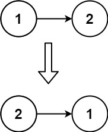

206. 反转链表
迭代原地反转：用 prev、cur、next 三个指针，逐个把结点的 next 改指向前一个结点。
思路
prev是已经反转好的部分的表头，初始为null；cur是当前要处理的结点，初始为head。- 每步先用
next存下cur.next：先改指针的话，后面的结点就找不到了。 - 然后
cur.next = prev把箭头反过来，再让prev、cur各前进一格。 cur走出链表时，prev正好是新表头，返回它；空链表也自然返回null。
图解
最优解
1class Solution {2 public ListNode reverseList(ListNode head) {3 // prev 是已反转部分的表头，初始为空4 ListNode prev = null, cur = head;5 while (cur != null) {6 // 先存下后继，断开后就找不到了7 ListNode next = cur.next;8 cur.next = prev;9 prev = cur;10 cur = next;11 }12 // cur 走出链表时，prev 就是新表头13 return prev;14 }15}题目
给你单链表的头节点

head ，请你反转链表，并返回反转后的链表。
示例 1：
输入：head = [1,2,3,4,5] 输出：[5,4,3,2,1]
示例 2：

输入：head = [1,2] 输出：[2,1]
示例 3：
输入：head = [] 输出：[]
提示：
- 链表中节点的数目范围是
[0, 5000] -5000 <= Node.val <= 5000
进阶：链表可以选用迭代或递归方式完成反转。你能否用两种方法解决这道题？
题面取自力扣当前版本。
数据快照 2026-11-04。题面版权归力扣所有，本站点仅供本人学习使用，请勿对外发布。